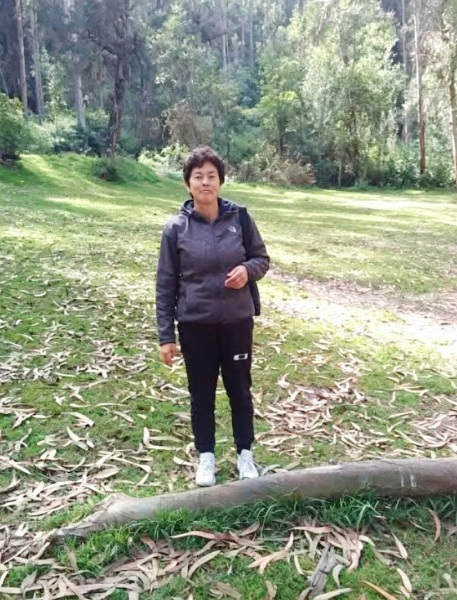

Línea de Tiempo del Personal
2008
Lic. Shalila Méndez
Licenciada
2010
Lic. Cristina Ayala
Licenciada
2012
Lic. Elena Rosero
Licenciada
2013
Lic. Sonia Chávez
Licenciada
2013
Lic. Andrea Ramos
Licenciada
2013
Lic. Esperanza Obando
Licenciada
2016
Lic. Yolanda Vera
Licenciada
2016
Lic. Andrea Fernández
Licenciada
2020
Lic. Diana Armijo
Licenciada
2008-Actualidad

Sra. Conserje
Conserje